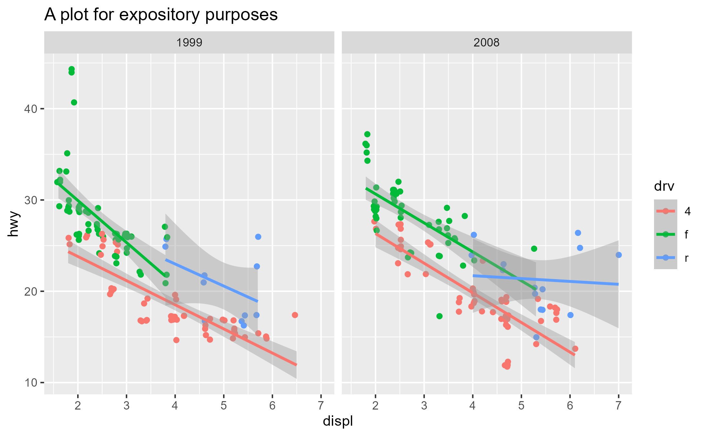
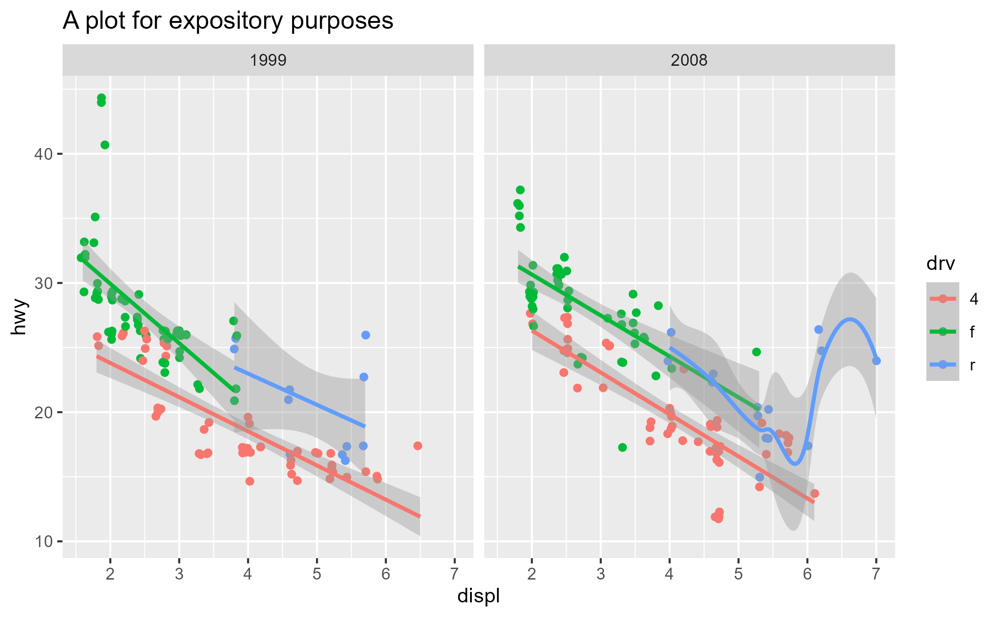

Workflows for interacting with ggplot internals
library(ggplot2)
packageVersion("ggplot2")
#> [1] '3.5.2.9001'NOTE: Making the most out of these workflow functions requires a hint of knowledge about ggplot internals, namely the fact that ggproto objects like Stat and Geom exists, and that these ggprotos have methods that step in at different parts of the ggplot build/render pipeline to modify the data. If you are completely new to these concepts, you should at least watch Thomas Lin Pedersen’s talk on Extending your ability to extend ggplot2 before proceeding.
A walkthrough with geom_smooth()
Say we want to learn more about how geom_smooth() layer
works, exactly
geom_smooth()
#> geom_smooth: na.rm = FALSE, orientation = NA, se = TRUE
#> stat_smooth: na.rm = FALSE, orientation = NA, se = TRUE
#> position_identityTo do this, we’re going to adopt the example from the ggplot2 internals chapter of the ggplot book
p <- ggplot(mpg, aes(displ, hwy, color = drv)) +
geom_point(position = position_jitter(seed = 1116)) +
geom_smooth(method = "lm", formula = y ~ x) +
facet_wrap(vars(year)) +
ggtitle("A plot for expository purposes")
p
Let’s focus on the Stat ggproto. We see that
geom_smooth() uses the StatSmooth ggproto
class( geom_smooth()$stat )
#> [1] "StatSmooth" "Stat" "ggproto" "gg"
identical(StatSmooth, geom_smooth()$stat)
#> [1] TRUEThe bulk of the work by a Stat is done in the compute_*
family of methods, which are essentially just functions. We’ll focus on
compute_group here:
# ggproto methods wrap over the actual function and print extra info
class( StatSmooth$compute_group )
#> [1] "ggproto_method"
# Use `get_method` to pull out just the function component
class( get_method(StatSmooth$compute_group) )
#> [1] "function"
# StatSmooth inherits `compute_layer`/`compute_panel` and defines `compute_group`
get_method_inheritance(StatSmooth)
#> $Stat
#> [1] "aesthetics" "compute_layer" "compute_panel" "default_aes"
#> [5] "finish_layer" "non_missing_aes" "optional_aes" "parameters"
#> [9] "retransform" "setup_data"
#>
#> $StatSmooth
#> [1] "compute_group" "dropped_aes" "extra_params" "required_aes"
#> [5] "setup_params"Inspect
Here we introduce our first workflow function
ggtrace_inspect_n(), which takes a ggplot as the first
argument and a ggproto method as the second argument, returning the
number of times the ggproto method has been called in the ggplot’s
evaluation:
ggtrace_inspect_n(x = p, method = StatSmooth$compute_group)
#> [1] 6As we might have guessed, StatSmooth$compute_group is
called for each fitted line (each group) in the plot. But if
StatSmooth$compute_group is essentially a function, what
does it return?
We can answer that with another workflow function
ggtrace_inspect_return(), which shares a similar
syntax:
return_val <- ggtrace_inspect_return(x = p, method = StatSmooth$compute_group)
dim(return_val)
#> [1] 80 6
head(return_val)
#> x y ymin ymax se flipped_aes
#> 1 1.800000 24.33592 23.07845 25.59339 0.6250675 FALSE
#> 2 1.859494 24.17860 22.94830 25.40890 0.6115600 FALSE
#> 3 1.918987 24.02127 22.81795 25.22460 0.5981528 FALSE
#> 4 1.978481 23.86395 22.68738 25.04052 0.5848527 FALSE
#> 5 2.037975 23.70663 22.55658 24.85668 0.5716673 FALSE
#> 6 2.097468 23.54931 22.42554 24.67307 0.5586045 FALSENote that ggtrace_inspect_return() only gave us 1
dataframe, corresponding to the return value of
StatSmooth$compute_group the first time it was
called. This comes from the default value of the third argument
cond being set to quote(._counter_ == 1).
Here, ._counter_ is an internal variable that keeps
track of how many times the method has been called. It’s available for
all workflow functions and you can read more in the Tracing
context section of the docs.
If we instead wanted to get the return value of
StatSmooth$compute_group for the third group of the second
panel, for example, we can do so in one of two ways:
-
Set the value of
condto an expression that evaluates to true for that panel and group:return_val_2_3_A <- ggtrace_inspect_return( x = p, method = StatSmooth$compute_group, cond = quote(data$PANEL[1] == 2 && data$group[1] == 3) ) -
Find the counter value when that condition is satisfied with
ggtrace_inspect_which(), and then simply check for the value of._counter_back inggtrace_inspect_return():ggtrace_inspect_which( x = p, method = StatSmooth$compute_group, cond = quote(data$PANEL[1] == 2 && data$group[1] == 3) ) #> [1] 6return_val_2_3_B <- ggtrace_inspect_return( x = p, method = StatSmooth$compute_group, cond = 6L # shorthand for `quote(._counter_ == 6L)` )
These two approaches work the same:
identical(return_val_2_3_A, return_val_2_3_B)
#> [1] TRUECapture
Okay, so we know what StatSmooth$compute_group returns,
but how does this return value change with different input? More
generally put, how does StatSmooth$compute_group behave
under different contexts?
We could answer this by making a bunch of different plots
using geom_smooth() and repeating the inspection workflow.
Alternatively, we can capture a call to
StatSmooth$compute_group and extract it as a function with
ggtrace_capture_fn():
captured_fn_2_3 <- ggtrace_capture_fn(
x = p,
method = StatSmooth$compute_group,
cond = quote(data$PANEL[1] == 2 && data$group[1] == 3)
)captured_fn_2_3 is essentially a snapshot of the
compute_group when it is called for the third group of the
second panel. Simply calling captured_fn_2_3 gives us the
expected return value:
identical(return_val_2_3_A, captured_fn_2_3())
#> [1] TRUEBut the true power of the “capture” workflow functions lies in the
ability to interact with what has been captured. In the case of
ggtrace_capture_fn(), the returned function has all of the
arguments passed to it at its execution stored in the formals.
In other words, it is “pre-filled” with its original values, which we
can inspect with formals():
# Just showing their type/class for space
sapply( formals(captured_fn_2_3) , class)
#> data scales method formula se
#> "data.frame" "list" "function" "formula" "logical"
#> n span fullrange xseq level
#> "numeric" "numeric" "logical" "NULL" "numeric"
#> method.args na.rm flipped_aes
#> "list" "logical" "logical"This makes it very convenient for us to explore its behavior with different arguments passed to it.
For example, when flipped_aes = TRUE, we get
xmin and xmax columns replacing
ymin and ymax:
head( captured_fn_2_3(flipped_aes = TRUE) )
#> y x xmin xmax se flipped_aes
#> 1 15.00000 5.450710 4.369619 6.531802 0.4961840 TRUE
#> 2 15.13924 5.448163 4.385577 6.510749 0.4876904 TRUE
#> 3 15.27848 5.445616 4.401438 6.489794 0.4792416 TRUE
#> 4 15.41772 5.443068 4.417196 6.468941 0.4708400 TRUE
#> 5 15.55696 5.440521 4.432846 6.448196 0.4624882 TRUE
#> 6 15.69620 5.437974 4.448381 6.427566 0.4541888 TRUEIn this sense, we can effectively simulate what happens in
geom_smooth(orientation = "y") without needing to construct
an entirely different ggplot.
For another example, when we set the confidence interval to 10% with
level = 0.1, the ymin and ymax
values deviate less from the y value:
head( captured_fn_2_3(level = 0.1) )
#> x y ymin ymax se flipped_aes
#> 1 4.000000 21.70513 21.46539 21.94487 1.867921 FALSE
#> 2 4.037975 21.69321 21.45840 21.92801 1.829458 FALSE
#> 3 4.075949 21.68128 21.45137 21.91119 1.791313 FALSE
#> 4 4.113924 21.66936 21.44430 21.89442 1.753509 FALSE
#> 5 4.151899 21.65743 21.43718 21.87769 1.716067 FALSE
#> 6 4.189873 21.64551 21.43001 21.86101 1.679011 FALSELastly, let’s talk about the data variable we’ve been
using inside the cond argument of some of these workflow
functions. What is data$group and data$PANEL?
How do you know what data looks like?
The answer is actually simple: it’s an argument passed to
StatSmooth$compute_group. We saw earlier that it’s stored
in formals(captured_fn_2_3), but to target it explicitly we
can also use ggtrace_inspect_args():
args_2_3 <- ggtrace_inspect_args(
x = p,
method = StatSmooth$compute_group,
cond = quote(data$PANEL[1] == 2 && data$group[1] == 3)
)
identical(names(args_2_3), names(formals(captured_fn_2_3)))
#> [1] TRUE
args_2_3$data
#> x y colour PANEL group
#> 10 5.3 20 r 2 3
#> 11 5.3 15 r 2 3
#> 12 5.3 20 r 2 3
#> 13 6.0 17 r 2 3
#> 14 6.2 26 r 2 3
#> 15 6.2 25 r 2 3
#> 16 7.0 24 r 2 3
#> 43 5.4 18 r 2 3
#> 48 4.0 26 r 2 3
#> 49 4.0 24 r 2 3
#> 50 4.6 23 r 2 3
#> 51 4.6 22 r 2 3
#> 52 5.4 20 r 2 3
#> 73 5.4 18 r 2 3We see that PANEL and group columns
conveniently give us information about the panel and group that
compute_group is doing calculations over.
Highjack
Once we have some understanding of how
StatSmooth$compute_group works, we may want to test some
hypotheses about what would happen to the resulting graphical output if
the method returned something else.
Let’s revisit our examples from the Capture workflow. What if the
third group of the second panel calculated a more conservative
confidence interval (level = 0.1)? What is this effect on
the graphical output?
To answer this question, we use
ggtrace_highjack_return() to have a method return an
entirely different value.
First we store the modified return value in some variable:
modified_return_smooth <- captured_fn_2_3(level = 0.1)Then we target the same group inside cond and pass
modified_return_smooth to the value
argument:
ggtrace_highjack_return(
x = p,
method = StatSmooth$compute_group,
cond = quote(data$PANEL[1] == 2 && data$group[1] == 3),
value = modified_return_smooth
)The confidence band is now nearly invisible for that fitted line because it’s only capturing a 10% confidence interval!
Here’s another example where we make the method fit predictions from
a loess regression instead. To achieve this directly, we use
ggtrace_highjack_args() here and set the
values to list(method = "loess"):
ggtrace_highjack_args(
x = p,
method = StatSmooth$compute_group,
cond = quote(data$PANEL[1] == 2 && data$group[1] == 3),
values = list(method = loess)
)
Lastly, ggtrace_highjack_return() exposes an internal
function called returnValue() in the value
argument, which simply returns the original return value. Passing the
value argument an expression
computing on returnValue() allows on-the-fly modifications
to the graphical output.
For example, we can “intercept” the dataframe output of a ggproto method, do data wrangling on it, and have the method return that new dataframe instead. Here, we hack the data for the group to make it look like there’s an absurd degree of heteroskedasticity: